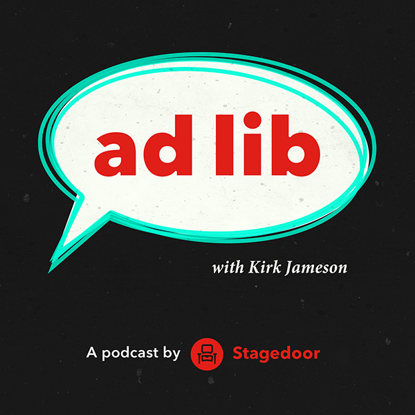

Stagedoor

Ad Lib
Podcast by Stagedoor
Each week director Kirk Jameson welcomes one of his favourite theatre personalities to chat about the joys and challenges of a career in the arts.


Ep. 7 - Tyrone Huntley
Release date: 2 May 2018.
This week Kirk is joined by the Olivier Award Nominated Tyrone Huntley. They discuss how a career in musical theatre was wasn’t always the obvious choice for Tyrone and the challenges of taking on new projects in smaller spaces.
Ep. 6 - Harriet Thorpe
Release date: 25 April 2018.
This week Kirk is joined by theatre, TV and film actress Harriet Thorpe. They discuss Harriet’s early beginnings in LA, her move from dance to drama and the moments that changed her career - including her time at the National and meeting Jennifer Saunders and Dawn French.
Ep. 5 - Fra Fee
Release date: 18 April 2018.
In the episode Kirk is joined by Fra Fee. They discuss his unlikely first acting jobs, his appearance in the movie version of “Les Miserables” and his award winning appearance in “The Ferryman”
Ep. 4 - Julie Atherton
Release date: 11 April 2018.
In the episode Kirk is joined by Julie Atherton. They discuss her first steps towards a career in theatre, the original London production of “Avenue Q” and the importance of new writing and London’s fringe.
Ep. 3 - Lara Denning
Release date: 04 April 2018.
In this episode Kirk is joined by close friend and fellow northerner, Lara Denning. They discuss growing up in Blackpool, audition technique and what it takes to over come insecurities as an actor.
Ep. 2 - Mark Anderson
Release date: 28 March 2018.
In this episode Kirk is joined by actor Mark Anderson as he appears in “The Grinning Man” at Trafalgar Studios. They discuss the changing face of London theatre, new writing and influence of Stiles and Drewe on his career.
Ep. 1 - Alice Fearn
Release date: 21 March 2018.
In this episode Kirk is joined by Alice Fearn; London’s Current Elphaba, from the Global Sensation “Wicked”. They discuss Alice’s path into theatre and her numerous musical credits including “Les Miserables”, “Into the Woods” “Oliver!” and “Shrek”.
Ad Lib Teaser
Release date: 14 March 2018.
Each week director Kirk Jameson welcomes one of his favourite theatre personalities to chat about the joys and challenges of a career in the arts.